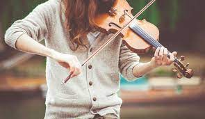

The Violin instrument is one of the best known and most widely played instruments in the world. The Violin instrument is a bowed instrument in the string family. It has a body made from multiple types of wood and features a fretless fingerboard on the neck. The strings are attached to tuning pegs on one end and to a tailpiece passing over a bridge on the other. The bridge transmits the strings’ vibrations to the hollow body of the instrument, which amplifies the sound. The Violin is the smallest and highest-pitched instrument in the string instruments family that is still currently in use. The strings are most commonly made from steel, synthetic materials or gut. However, the smallest and highest-pitched string is sometimes made from gold or silver because they can be incredibly thin while maintaining the strength needed to play. Violin musical instruments are most commonly played by drawing a bow across the strings, causing them to vibrate. The standard modern bow is traditionally made from brazilwood and horsetail hair, although many synthetic materials are used today. At one end a screw adjuster tightens or loosens the hair and next to that lies the grip, a thumb cushion usually made from leather or plastic. Bows are occasionally rubbed with rosin to make the hair grip the strings intermittently, which is what causes the vibration. Learn Violin Online on ipassio Violins are used in a wide variety of genres but are most prominent in Western classical music. They are also quite popular in folk, bluegrass, jazz, Indian classical and Iranian music. Sometimes informally called a fiddle, this is a nickname and does not denote a certain type of violin or musical genre. As a side note, a person who makes or repairs violins is called a luthier and most high-end violins have traditionally been hand-crafted individually, which is still the standard today.The violin borrowed from many of the stringed instruments that came before it and therefore shares similarities with many of the first stringed instruments. However, the first true violin in its present form was created in early 16th century Italy. The earliest violins were used in popular music, particularly for dancing. In the 17th century, the violin replaced its predecessor, the viol, as the predominate stringed instrument in chamber music. It was during this time that the violin began to be included in orchestras and many prominent composers began to wrote solo music for the violin. Within around 100 years of its invention, the earliest violin makers had settled on the average proportions that would become the standard. Over the next century, there were slight modifications made, particularly a narrower arch in the belly of the instrument and a shallower body. In the 19th century, because of the rise in popularity of violin soloists and the advent of large auditoriums, the bridge was heightened and the body became flatter. The result of this final change to the design was a stronger, more brilliant tone, replacing the more subtle tone of its predecessor.
In the 20th century, the violin became one of the first electric instruments. Developed in the 1920s, the electric violin uses an amplifier to magnify the vibrations produced by the strings. Modern day electronic violins have been re-designed to avoid feedback from the resonance of the hollow body. These violins have a narrow, solid body that typically only extends to the width of the strings and are commonly made from kevlar, glass and carbon fibers. The sound of an electric violin can be described as “rawer” than the warm tone produced by a traditional violin and for this reason, they are popular in rock and electronic music. Types of Violin Musical Instrument The most popular type of violin musical instrument is the full-size traditional one, the standard for the last 300 to 400 years. Fractional violins come in multiple smaller sizes, commonly used by children or adults with small frames whose fingers are not long enough to reach the correct positions. Although these violins come in standard sizes like 7/8, 3/4 and 1/2, they are not descriptions of relative proportions even though they are made in the same way as a full-size (4/4) violin. The violin octet family is a series of stringed instruments developed in the 20th century by an American violin maker. Each instrument is based directly on the traditional violin with slight changes to each one, producing a number of similar but different sounds. Below are the violins making up the octet family: • Treble violin • Soprano violin • Mezza violin • Alto violin • Tenor violin • Baritone violin • Bass violin • Contrabass violin Violin Playing Techniques The violin is typically played by using a set of standard hand positions. Because the violin doesn’t have frets, the player must know precisely where to place their fingers on the strings. This is learned through instruction, practice, and ear training. In addition to standard playing, there are several popular techniques used in multiple musical genres. Three of the most popular violin playing techniques are explained below. Vibrato is a technique that produces a note with a pulsating rhythm. The effect is produced by a combination of finger, wrist and arm movement. The technique can be individualized by each player but it typically involves rocking the wrist or elbow to achieve oscillation that modulates the pitch. Pizzicato involves plucking the strings with a finger instead of using the bow to produce vibration. The effect can be created by either hand but only left-hand pizzicato can produce a technically correct note. This is because the hand not holding the bow can place one finger in the correct position on the string while using another to pluck just above it. Harmonics is a technique used on open strings, which are strings played without any finger stopping it on the neck. Once an open string has been played, the string is lightly touched with a fingertip, creating harmonics. In place of the normal tone, a higher one sounds. Depending on how the bow is used, a number of effects can be created. Using more weight on the string or a faster bow speed produces slightly different but louder notes. A louder sound can also be produced by playing close to the bridge of the instrument while playing close to the fingerboard creates a lighter sound. Additionally, there are many different bowing methods that produce slightly different articulations. These can be individual to players, teachers and groups. A few of the most common bowing techniques are ricochet, spiccato and staccato. Violin Mechanics The various pitches produced by a violin depends on the note that each string is tuned to. The strings are tuned by turning the pegs located in the pegbox under the scroll at the top of the instrument. Generally, tightening a string causes the pitch to be higher, while loosening a string causes the pitch to be lower. In Western music, the four strings are tuned in perfect fifths, a musical interval that stretches from the first to the last of five consecutive notes in a scale. Typically, the four strings are tuned to the notes G-D-A-E. In Iranian music, the notes are tuned to one of the dastgahs, a Persian musical modal system that constitutes a melody type. Although there are up to 50 different dastgahs, usually the four strings will be tuned to either E-A-E-A or E-A-D-A. In South Indian Carnatic style, the violin strings are tuned to D#-A#-D#-A# or B flat-F-B flat-F with the latter corresponding to Sa-Pa-Sa-Pa. In North Indian Hindustani classical music, the tuning is reversed, which looks like F-B flat-F-B flat, or Pa-Sa-Pa-Sa.